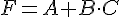
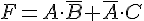
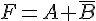
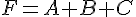
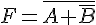
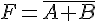
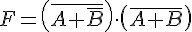
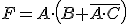

Electrónica digital
6.6. Puertas lógicas. Implementación.
Ejercicio 38
Implementa con puertas lógicas
la función 
Ejercicio 39
Implementa con puertas lógicas
la función 
Ejercicio 40
Implementa con puertas lógicas la función: 
Ejercicio 41
Implementa con puertas lógicas
las siguientes funciones, realizando previamente una simplificación, caso de
que sea posible: a) ; b) ; c) ; d) ; e) .
Ejercicio 42
Implementa las puertas NOT, OR, NOR y AND sólo con puertas NAND.
Ejercicio 43
Implementa sólo con puertas NOR las puertas: NOT,
OR, NAND y AND
Ejercicio 44
Implementa sólo con puertas NAND la puerta OREX.
Ejercicio 45
Implementa sólo con puertas NOR la puerta OREX.
Ejercicio 46
Implementa sólo con puertas NAND la puerta NOR-EX.
Ejercicio 47
Implementar sólo
con puertas NOR la puerta NOR-EX.
Ejercicio 48
Implementa A+B sólo con puertas NAND.
Ejercicio 49
Implementa la función A+B sólo con puertas NOR.
Ejercicio 50
Implementa la función lógica  sólo con puertas NAND,
e indica si esta operación tiene alguna ventaja.
Ejercicio 51
Implementa  únicamente con puertas NAND
únicamente con puertas NAND
únicamente con puertas NANDEjercicio 52
Implementa la función del ejercicio anterior sólo con puertas NOR.
Obra publicada con Licencia Creative Commons Reconocimiento No comercial Compartir igual 4.0